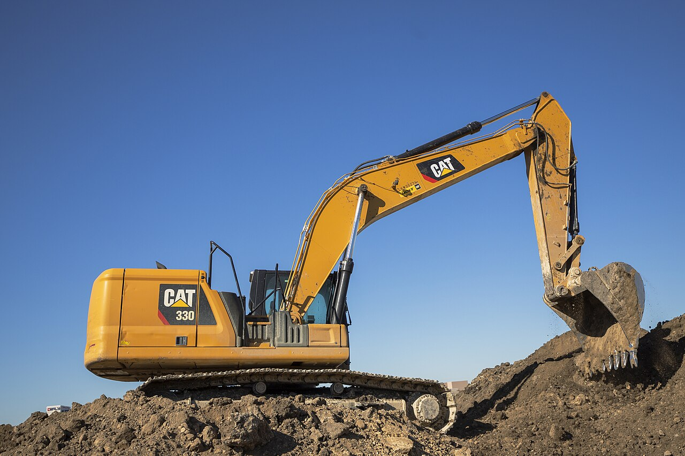

01
Excavation
Digging and removing earth for foundations, utilities, and other below-grade work.
Charleston County, South Carolina
T. C. Dirtworks is a full-service excavation company owned by Timothy (Tim) Campbell. In business since 2026, with 8 years of excavating experience.

Services
T. C. Dirtworks takes on excavation and the site work that goes with it, across Charleston County.
01
Digging and removing earth for foundations, utilities, and other below-grade work.
02
Shaping soil to the elevations a site needs, including leveling and sloping the ground.
03
Removing trees, brush, and surface debris so a piece of ground can be worked.
04
Getting a property ready for construction, from clearing through rough shaping of the site.
05
Moving water off a property with grading, swales, ditches, or pipe.
06
Opening trenches for utilities, footings, and drainage lines.
07
Taking down structures and clearing the material that comes out of that work.
08
Loading and transporting soil, debris, and other materials to or from a job.
09
Building or rebuilding a driveway, including grading and placing base material.
Estimates
Call or send the form. Share enough about the job for T. C. Dirtworks to price it.
01
Call or use the form. Include the job site, the service you need, and how you prefer to be reached.
02
The details go to T. C. Dirtworks so the work can be estimated.
03
T. C. Dirtworks strives for perfection on every job.
About
T. C. Dirtworks is a full-service excavation company in Charleston, South Carolina, owned by Timothy (Tim) Campbell. The company has been in business since 2026. Tim has 8 years of excavating experience.
Work covers excavation, grading, land clearing, site prep, drainage, trenching, demolition, hauling, and driveways for properties in Charleston County.
Company standard Strives for perfection on every job.
Gallery
Photos of T. C. Dirtworks jobs will be added here. The frames below are empty on purpose. Nothing in this section is a finished company project.
Six empty frames are reserved for future project photos.
Reviews
Customer reviews will be posted here when they are available. This proof of concept does not include sample or fictional testimonials.
Free estimate
Send the job site, the service, and the way you prefer to be contacted. You can also call or email directly.
854-275-9644Demo form. Submitting opens an email to info@tcdirtworks.com. It does not store the message or send it by itself.
Required fields are marked with an asterisk.